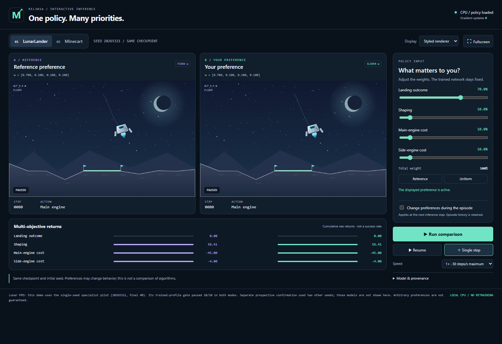
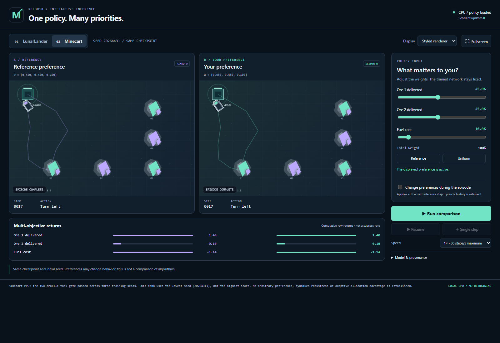
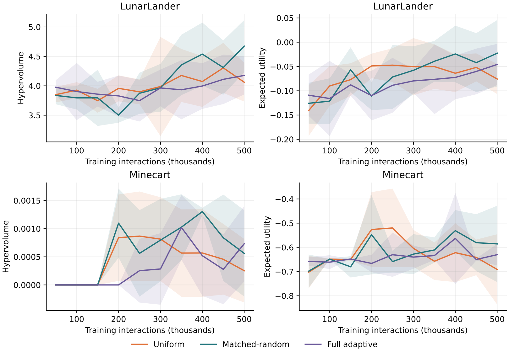
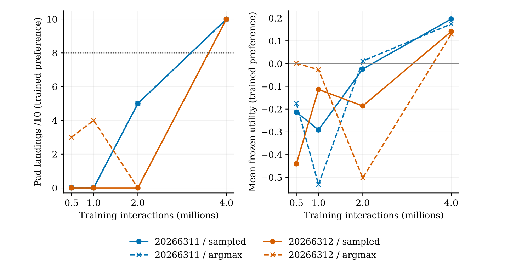
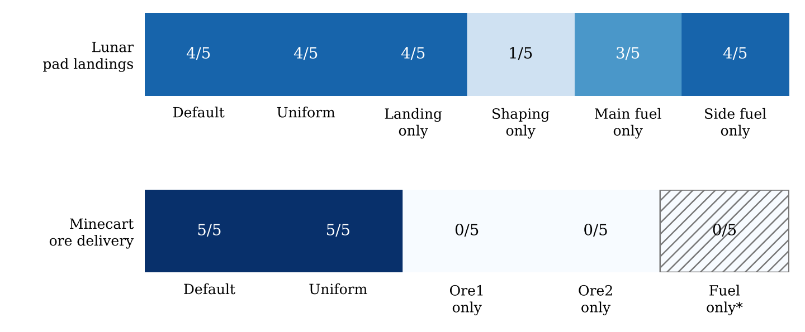
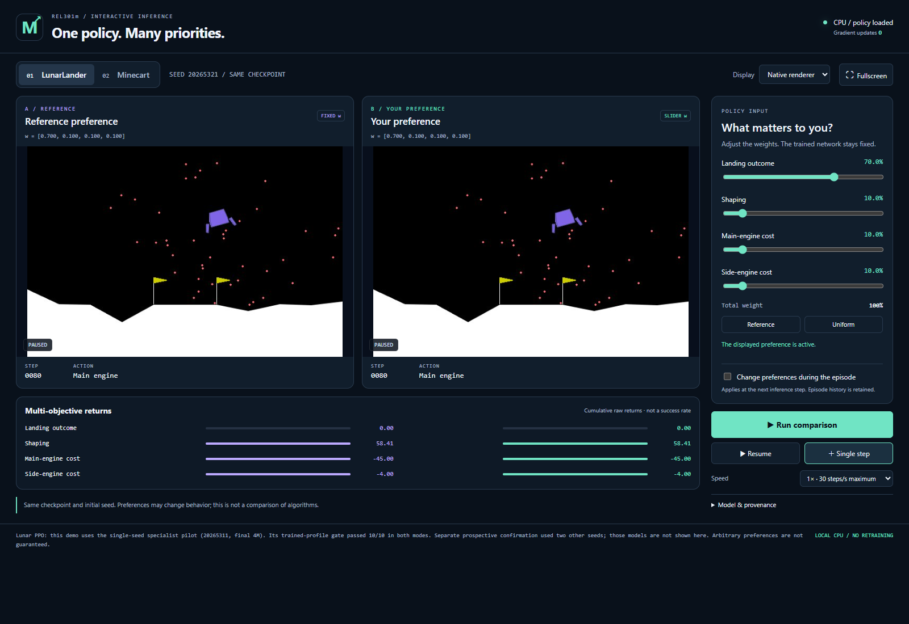

A controlled investigation of preference allocation in Minecart and MO-LunarLander, with PCQN and PPO implementations, retained negative results and a working inference application.
Huynh Quoc Viet (SE194225), Le Nguyen Gia Hung (SE194127), Ngo Hoai Nam (SE194190). Lecturer: Luu Giang Nam. FPT University, Fall 2026.
The project supports specific task-competence results. Adaptive-allocation superiority and competence at every preference remain unestablished.

A lander balances landing outcome, shaping and engine costs. A minecart balances two delivered ore objectives against fuel cost.
A nonnegative vector w specifies a trade-off. A conditioned policy receives both the state and w, rather than requiring a separately selected actor for every input.
Under matched budgets, can difficulty, disagreement, coverage/recency or learning progress identify useful preference regions? The comparative scientific question is still open.

Each environment emits r_t in R^d. Discounted return: G_t = sum over k of gamma^k r_(t+k). Raw and discounted vectors are retained separately.
u_w(G) = w^T G, with w_i >= 0 and sum_i w_i = 1. A scalar utility depends on the chosen preference; it is not a universal task-success measure.
a_t is selected from pi_theta(a | s_t, w). The preference changes the network input. It does not change model weights during demonstration.
One model input can change; the scientific scope stays explicit.
Observation features and preferences feed the policy/value computation. PPO uses a categorical actor and vector-valued critic with objective normalization.
Minecart and Lunar use declared environment-specific PPO paths. GAE belongs to the Lunar-specific implementation; it is not attributed to every Minecart run.
Preference-conditioned vector Q-learning, Double-DQN targets and masked shared-feature heads are implemented. Masked heads are not fully independent uncertainty estimators.
One model input can change; the scientific scope stays explicit.
30 jobs across two environments, three arms and five paired training seeds retained 28,800 validation episodes. Minecart ore returns were zero in all 14,400 Minecart episodes.
Sparse delayed rewards and credit assignment are plausible concerns. The observed failure does not prove that all value-based methods fail or identify a unique causal mechanism.
The task failure blocks the original comparative qualification and final-test workflow. Negative outcomes remain in the report and evidence registry.

Three fresh training seeds passed the specified nominal task gates under the declared evaluation modes. Several cases per seed do not create additional independent training replications.
Two prospective confirmation training seeds passed the trained-profile landing gate. They are separate from the specialist pilot displayed in the application.
These are bounded confirmation results, not a matched demonstration that PPO is universally superior or that adaptive allocation improves performance.

The retained preference diagnosis contains 55 episodes over five fresh environment seeds. This is a limited probe, not broad robustness certification.
A fuel-focused preference can express a different goal from landing or ore delivery. Utility, vector returns and task indicators must be interpreted together.
Generalization to new preferences differs from robustness to shifted dynamics. Neither follows automatically from nominal task success.

Both panels use the same checkpoint and initial seed. The left keeps a reference preference; the right accepts a user preference.
Single-step, run/reset, original versus styled rendering and JSON trace export expose the actual environment state, actions and vector rewards.
The displayed actors are fixed. The application performs no optimizer steps, training or original final-test evaluation. The video records this application.
By default, edited weights remain pending until a fresh comparison starts. Reset restores matched initial states.
A change during an episode preserves the trajectory already taken. The panels may then have different histories, so reset before interpreting a fresh comparison.
Similar or unsuccessful behaviors at corner weights are reported honestly. A conditioned network is not proof that every input preference was learned reliably.
Versioned protocols, paired seeds, retained reward vectors, provenance receipts, registries and separated training/evaluation budgets.
The report preserves the negative PCQN study and separately declared PPO confirmations. Planned, smoke-tested and supported claims are distinguished.
Compare adaptive allocation with uniform and compute-matched random controls after the required gates pass. Broader preference and dynamics studies remain future work.
One model input can change; the scientific scope stays explicit.
Abels et al. (ICML 2019), Yang et al. (NeurIPS 2019), and Xu et al. (ICML 2020) provide relevant approaches to dynamic preferences, envelope learning and population-based MORL.
Schulman et al. (PPO, 2017), van Hasselt et al. (PopArt, 2016), MO-Gymnasium, and Terekhov & Gulcehre (2024) inform methods and environment-specific implementation choices.
We do not claim prior methods universally fail, a new PPO algorithm, or established adaptive-allocation benefit. Full bibliographic entries and qualified comparisons are in the English report.
One model input can change; the scientific scope stays explicit.
The English report explains methods, outcomes, limitations and reproduction. The slide PDF preserves this fixed 16:9 layout. The narrated MP4 demonstrates the application.
GitHub contains code, declared protocols and versioned evidence. Generated checkpoints, caches and private configuration remain outside the source repository.
Original final-test access remains locked. There is no claim of reliable behavior at every preference or under new dynamics. Thank you for your questions and feedback.
